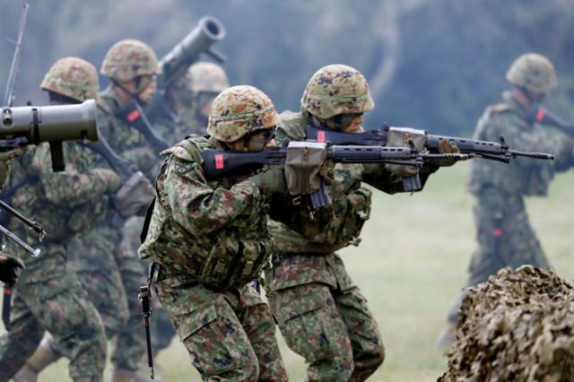
자위대는 형식적으로 '군대'가 아니라 '준군사조직'으로 병과의 명칭이 국군과 다른데....
육상자위대의 병과 명칭을 알아보겠다.
1. 보통과 (普通科)
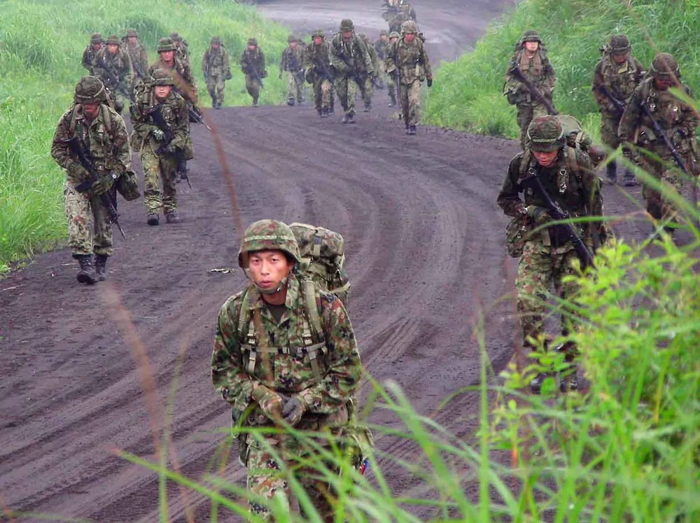
대한민국 육군 기준으로 보병에 해당하는 병과다.
2. 기갑과 (機甲科)
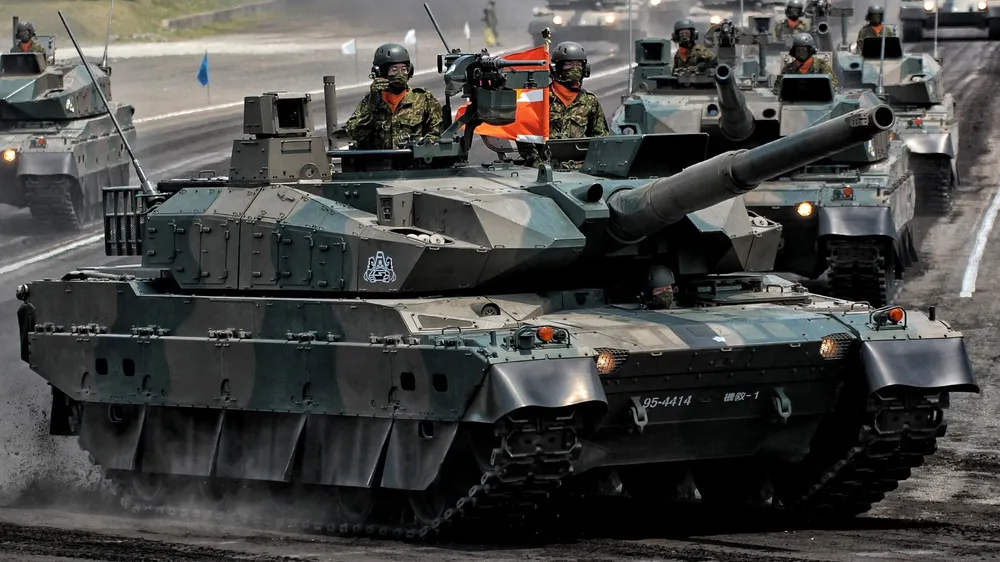
대한민국 육군 기준으로 기갑에 해당하는 병과다.
3. 야전특과 (野戦特科)
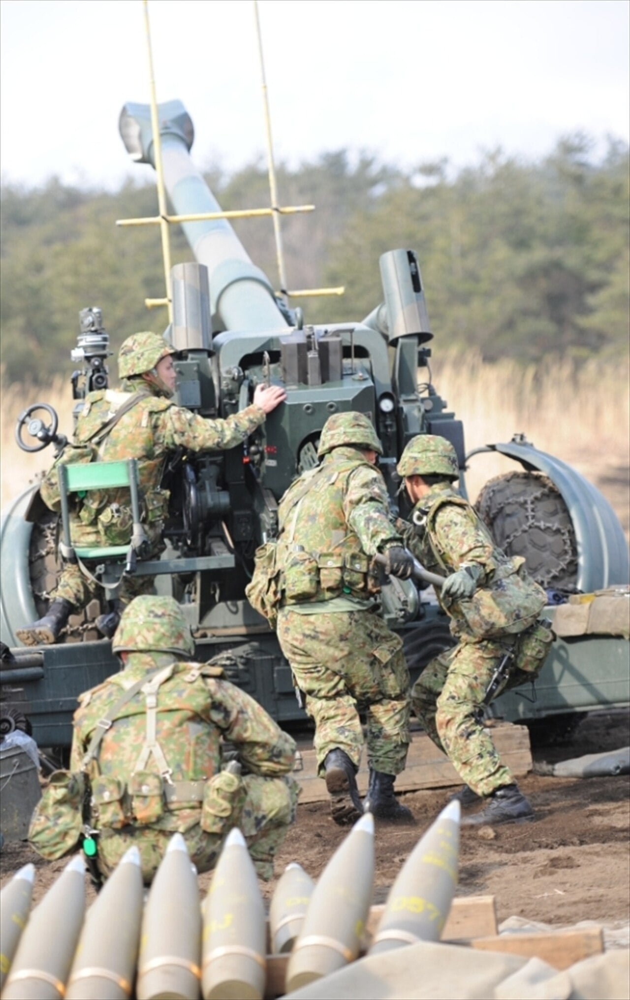
대한민국 육군 기준으로 포병에 해당하는 병과다.
4. 고사특과 (高射特科)
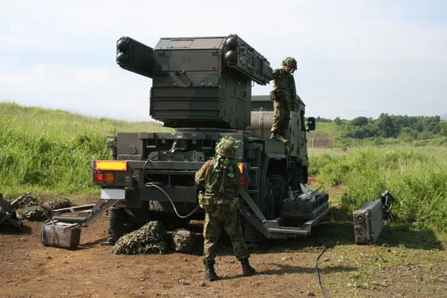
대한민국 육군 기준으로 방공에 해당하는 병과다.
5. 정보과 (情報科)
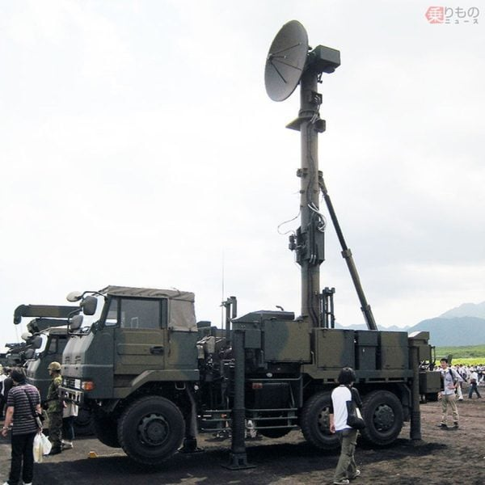
대한민국 육군 기준으로 정보에 해당하는 병과다.
6. 시설과 (施設科)
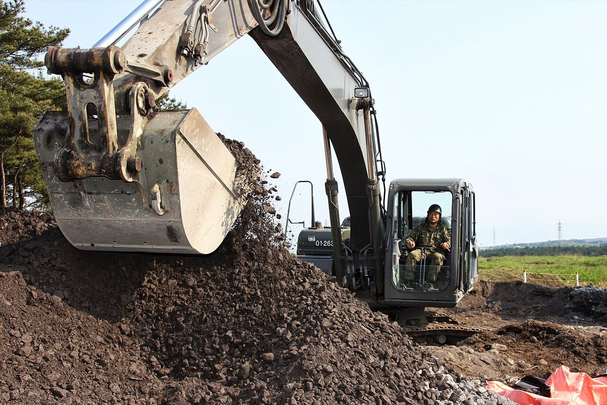
대한민국 육군 기준으로 공병에 해당하는 병과다.
7. 통신과 (通信科)
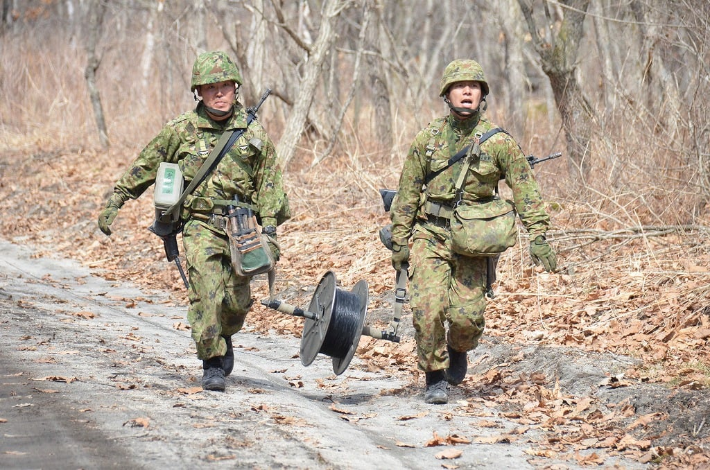
대한민국 육군 기준으로 정보통신에 해당하는 병과다.
8. 무기과 (武器科)
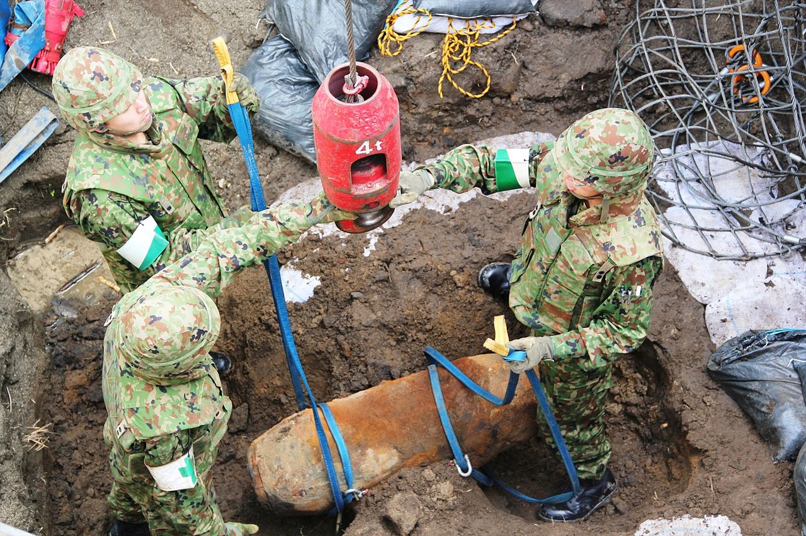
대한민국 육군 기준으로 병기에 해당하는 병과다.
9. 수품과 (需品科)
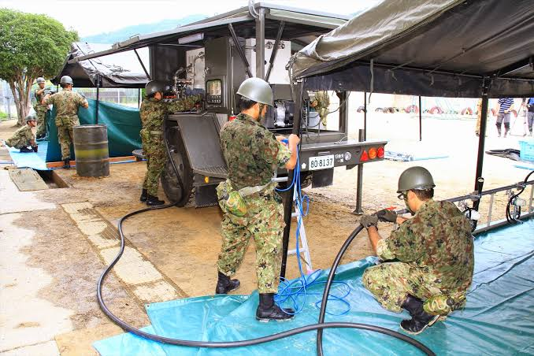
대한민국 육군 기준으로 군수에 해당하는 병과다.
10. 수송과 (輸送科)
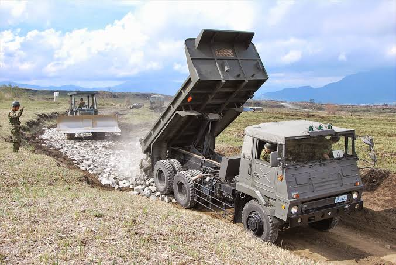
대한민국 육군 기준으로 수송에 해당하는 병과다.
11. 화학과 (化学科)
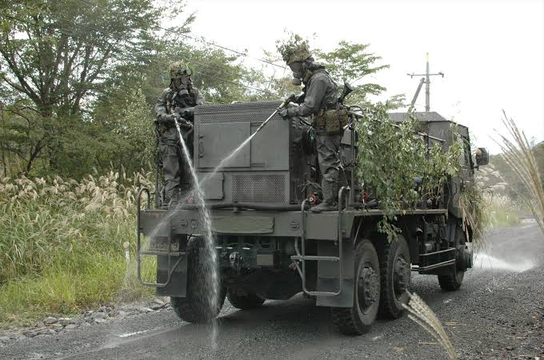
대한민국 육군 기준으로 화생방에 해당하는 병과다.
12. 경무과 (警務科)
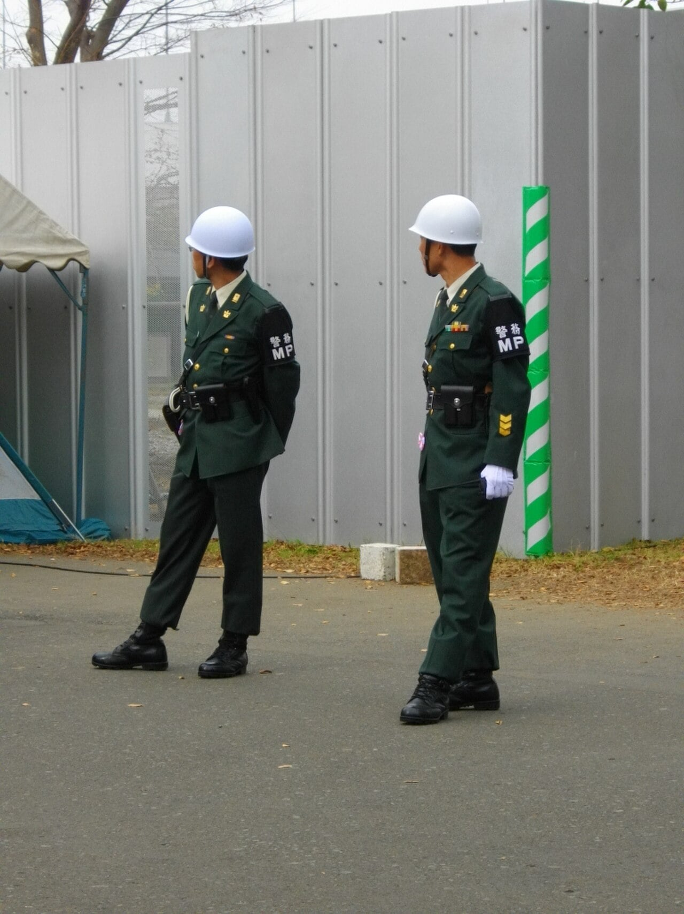
대한민국 육군 기준으로 군사경찰에 해당하는 병과다.
13. 회계과 (会計科)
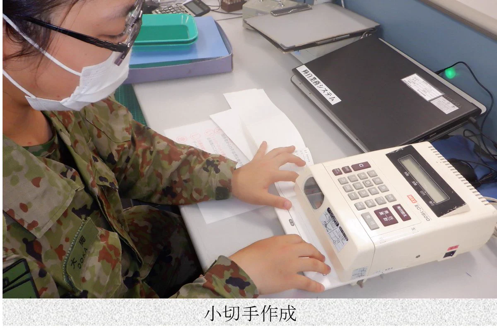
대한민국 육군 기준으로 재정에 해당하는 병과다.
14. 위생과 (衛生科)
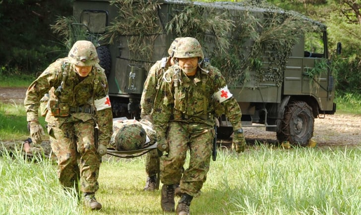
대한민국 육군 기준으로 의무에 해당하는 병과다.
15. 항공과 (航空科)
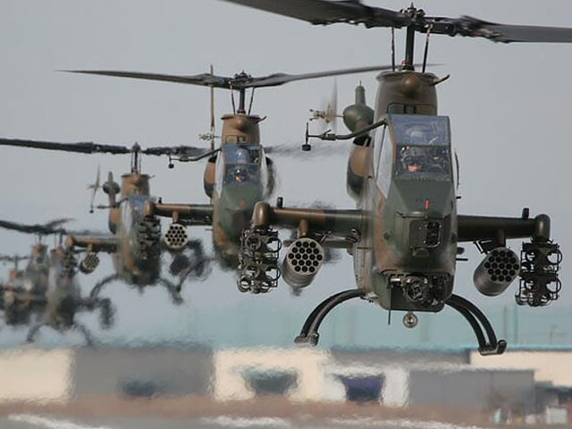
대한민국 육군 기준으로 항공에 해당하는 병과다.
16. 음악과 (音楽科)
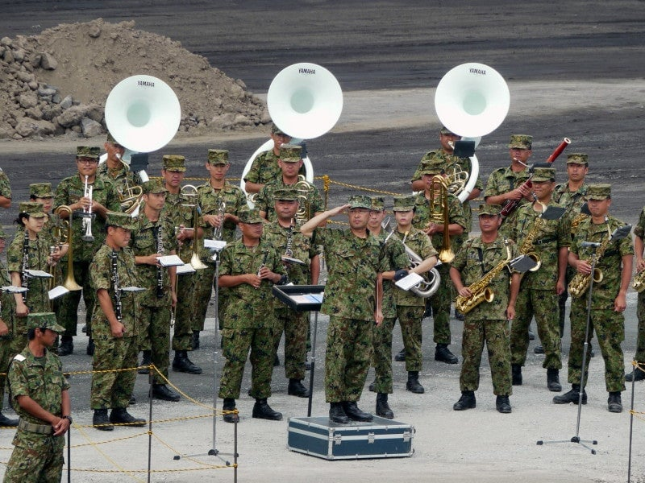
대한민국 육군 기준으로 군악에 해당하는 병과다.
7. 방차통을 2명이서 들고 다닌다고 ㅅㅂ? 라떼는 등 뒤에 혼자 매고 다녀서 거북이 등딱이라고 불렀는데 ㅅㅂ 저걸 상병까지 매고 다녔었는데 살 존나 잘 빠지긴 했어